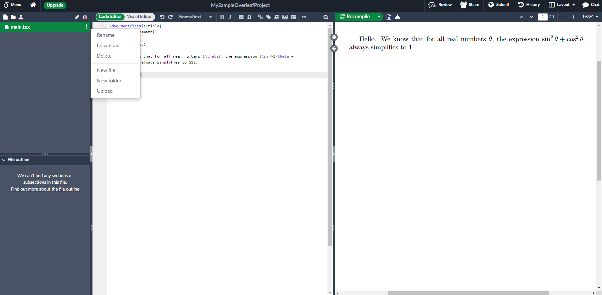

Options for getting started with LaTeX on Windows
- If you do not want to have the lag of an internet connection, then on Windows I suggest you download the Basic MiKTeX installer. During the installation process, choose to install needed packages automatically. As part of the installation, the TeXWorks latex editor is installed. Open TeXWorks, as this is the app where you type, and compile to see a PDF preview.
- If you do not wish to install anything on your computer, create a free account at overleaf.com.
Here, you will type LaTeX into the middle column, and a preview of what the PDF would look like shows in the right column after clicking Recompile.
The pro about using Overleaf is that it is fully online (so you do not have to download then install anything on a computer),
but the downside is that you are waiting for your work over an internet connection, and the delay might be annoying.
- A note about Windows hiding file extensions by default:
Files on a computer have extensions.
For example, class-syllabus.pdf has "pdf" as the extension.
(As another example, files from Microsoft Word usually have the "docx" extension, as in my-awesome-essay.docx)
The default set up in Windows is to hide file extensions, so that the PDF example gets displayed in Windows Explorer as class-syllabus where the ".pdf" part is intentionally hidden by the computer.
This is usually fine for most people, but when using LaTeX, you might have homework08.tex and homework08.pdf in the same folder, and it is helpful to change the computer's setting to always show extensions.
Show extensions in Windows 10
Show extensions in Windows 11
- Layout of Overleaf: The column on the left is used rarely (just to upload or download tex files), so you can collapse it (using the icon that looks like a less than sign in the column separator). Typically, you'll just want to see the middle column (where you type LaTeX code) and the right column (where you get an on-screen preview of the PDF). You can drag the column separator to set which column you see more of.
- How to upload a TEX file: In the three columns, look in the left column. The third button (with an up-arrow in it) is the upload button. After uploading a TEX file (this might be a template from your professor, or the TEX file that has the list of questions for your homework), you may wish to delete the default main.tex file, so that you only have one tex file in your Overleaf project.
- How to download your work as a TEX file: To the right of your tex file (in my screenshot below, the tex file I have is called main.tex), there is an icon with three vertical dots. In clicking this, the second option in the menu is Download
- How to download your work as a PDF file: In the three columns, the column on the right shows an on-screen preview of the PDF. Above this, to the right of the Recompile button, there is an icon with a down-arrow on it
